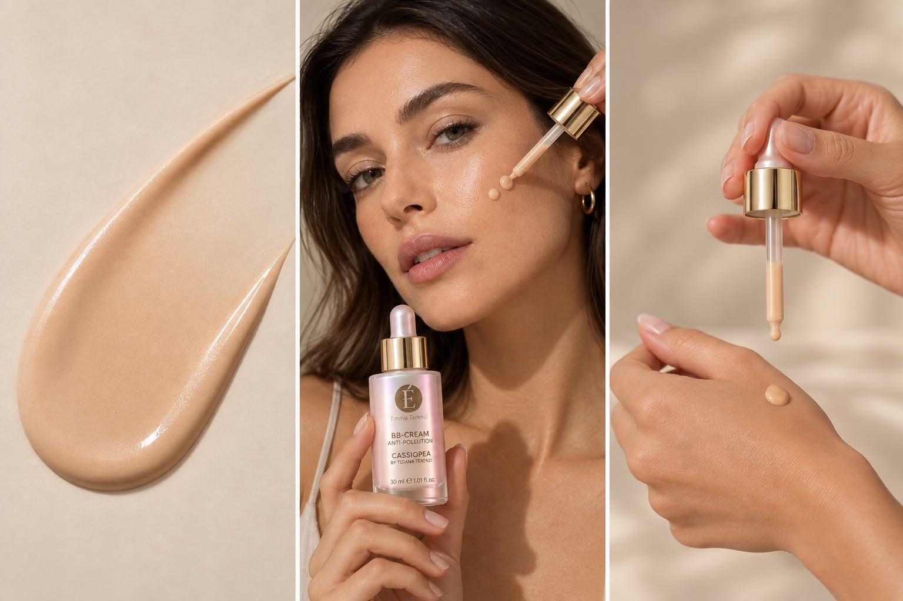
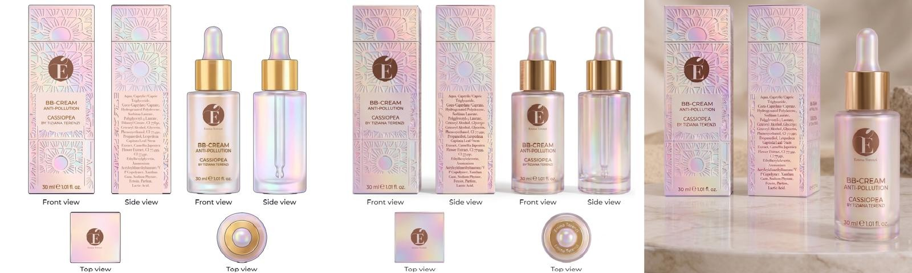

The product in use



A make-up product designed as a skincare product
The BB cream sits in the make-up category — a fluid, tinted, leave-on O/W emulsion delivered from a 30 ml glass dropper, formulated for light-to-medium coverage on facial skin. The dropper closure was chosen deliberately: it enables precise single-dose delivery for a fluid pigmented product, and limits unnecessary exposure of the photoprotective and antioxidant actives to air. Colour is built from a trichromatic inorganic pigment system — titanium dioxide (CI 77891), iron oxide yellow (CI 77492), and iron oxide brown (CI 77499, CI 77491, CI 77492) — each dispersed as pre-wetted slurries in the oil phase.
It exists in the thesis to validate the ester-blend emulsifier (Sorbitan Laurate / Polyglyceryl-4 Laurate / Dilauryl Citrate) against the one demand that eliminated the other two systems: pigment. The alkyl-polyglucoside platform separates on contact with inorganic pigment (Series 7); the modified starch showed on-storage phase migration in the pigmented variant. Only the ester blend passed Series 7 with a fine, uniform 2–8 µm dispersion and a sensory profile — light, fluid, low soaping effect — that matched what a tinted facial fluid must feel like at the point of application.
Final formulation
Ester Blend @ 4 % · Sorbitan Laurate / Polyglyceryl-4 Laurate / Dilauryl Citrate| Phase | INCI name | w/w % |
|---|---|---|
| A | Aqua | q.s. to 100 |
| A | Xanthan Gum | 0.1 – 0.5 |
| A1 | Sodium Phytate | < 0.5 |
| A1 | Glycerin | 0.5 – 2 |
| A1 | Ectoin | < 1 |
| B | Caprylic/Capric Triglyceride | 5 – 10 |
| B | Coco-Caprylate/Caprate | 5 – 10 |
| B | Hydrogenated Polydecene | 5 – 10 |
| B | Cetearyl Alcohol | 0.5 – 2 |
| B | Sorbitan Laurate, Polyglyceryl-4 Laurate, Dilauryl Citrate | 2 – 5 |
| B1 | CI 77891 (titanium dioxide) | 2 – 5 |
| B1 | CI 77492 (iron oxide yellow) | 0.5 – 1 |
| B1 | CI 77499, CI 77491, CI 77492 (iron oxide brown) | < 0.5 |
| C | Ammonium Acryloyldimethyltaurate/VP Copolymer | < 0.5 |
| D | Propanediol, Aqua, Lespedeza Capitata Leaf/Stem Extract | 0.5 – 1 |
| E | Aqua, Propanediol, Camellia Japonica Flower Extract | 0.5 – 1 |
| F | Phenoxyethanol, Ethylhexylglycerin | 0.5 – 2 |
| G | Parfum | 0.1 – 1 |
| H | Lactic Acid | q.s. |
Emulsification temperature intentionally reduced from 75 °C to 60 °C — a preliminary trial finding that higher temperatures degraded the ester emulsifier's performance and reduced physical stability, integrated into the finished process.
A three-mechanism anti-pollution complex
Pollution-induced cutaneous stress involves oxidative radical generation and disruption of circadian skin homeostasis, and therefore cannot be effectively addressed by a single-mechanism ingredient. Three actives, three complementary mechanisms.
Ectoin [1]
A cyclo-amino-acid extremolyte produced by halophilic and thermophilic microorganisms of the genus Halomonas elongata. As a compatible solute it accumulates intracellularly at high concentrations without disrupting enzyme function, stabilising macromolecular structures by forming preferential hydration shells around proteins and lipid membranes. At the cellular level it stabilises lipid-bilayer fluidity, reduces membrane permeability to reactive oxygen species, and protects heat-shock protein expression under UV, particulate and cytokine stress. Published in vitro and clinical studies at 0.05–0.20 % show reduced IL-1β and TNF-α release in keratinocyte cultures exposed to PM2.5 and diesel exhaust particles, and attenuation of the TRPA-1-mediated inflammatory cascade triggered by polycyclic aromatic hydrocarbon adsorption onto the skin surface.
Lespedeza Capitata Leaf/Stem Extract [2,3]
A temperate legume (bush clover) whose aerial parts are rich in flavonoid glycosides, isoflavones and condensed tannins. The epidermis maintains its own autonomous circadian oscillator that governs keratinocyte proliferation, desquamation, DNA repair and antioxidant enzyme expression (catalase, superoxide dismutase, glutathione peroxidase) in a time-dependent manner. Pollution-derived aryl hydrocarbon receptor (AhR) activation phase-shifts this clock by cross-talking with the CLOCK–BMAL1 transcription complex — diminishing nocturnal antioxidant capacity and impairing diurnal barrier repair. Lespedeza's flavonoid-rich fraction has been reported to mitigate this AhR-mediated disruption in in vitro keratinocyte models, contributing both direct antioxidant activity and a chronobiological regulatory function targeting the epidermal oscillator.
Camellia Japonica Flower Extract [4]
Camellia japonica flowers accumulate a characteristic profile of polyphenolic secondary metabolites — catechins, gallic acid derivatives and anthocyanin precursors — with demonstrated radical-scavenging activity against superoxide anion, hydroxyl radical and singlet oxygen. These reactive species are generated by the photochemical reaction of urban particulate matter — particularly its transition-metal and quinone fraction — with epidermal biomolecules on skin contact, and their neutralisation by a phenolic antioxidant is complementary to, not redundant with, the membrane-stabilising mechanism of ectoin. Published in vitro data show reduced NADPH oxidase activation and inhibition of MMP-1 expression in UVA-exposed fibroblasts.
The three mechanisms combine as: (i) membrane and protein stabilisation under osmotic and oxidative stress — Ectoin; (ii) circadian clock protection and AhR-pathway modulation — Lespedeza Capitata; (iii) direct radical neutralisation and MMP inhibition — Camellia Japonica. Consistent with current expert-consensus guidance on credible anti-pollution functional claims in leave-on facial products.
Instrumental panel — t0 and t24h
| Parameter | Result |
|---|---|
| pH (t0 / t24h) | 6.8 / 6.8 Stable and skin-compatible; no drift over 24 h — satisfactory short-term chemical stability of the aqueous phase. |
| Viscosity at 2.5 rpm (t0 / t24h) | 3,008 / 3,984 mPa·s Characteristic time-dependent viscosity increase from 8,960 to 19,520 mPa·s across the full rheological profile — consistent with delayed polymer-network consolidation, correct for a dropper-dispensed fluid emulsion. |
| Centrifugation test | Pigment sedimentation; no emulsion phase separation The ester-blend O/W matrix itself is robust; the small observed sedimentation is pigment-driven, not emulsion breakdown, and is easily corrected on shake before use. |
| Optical microscopy | Uniform droplet distribution, 2–5 µm The fine, monodisperse droplet population confirms that the 4 % emulsifier plus Xanthan Gum + Cetearyl Alcohol pair, at 60 °C process temperature, produced the intended microstructure. |
How the panel described it
The panel returned the lightest, most fluid, most spreadable profile of the three base systems and — critically for a face product — the lowest soaping effect. On the pigmented series, the ester blend scored colour homogeneity 7.3 / 10 and blendability 7.6 / 10, both well ahead of the alternatives that had already been ruled out at the base-emulsion stage: the APG platform separated on contact with inorganic pigment and was excluded from Series 7 entirely, and the modified starch showed on-storage oil migration in its pigmented variant. Application feel matched the make-up brief: light pickup, easy spread, quick absorption, and a low residual film — the tinted-fluid gesture, without the heaviness that ruins it.
Why this emulsifier for this product
Of the three systems screened, only the ester blend passed Series 7 with credible pigmented performance — a colour-homogeneity of 7.3 and a blendability of 7.6, against an APG platform that separated on contact with inorganic pigment and a starch platform that migrated on storage. That single result eliminated two of three candidates and made the assignment mechanical, not discretionary. Its sensory identity — light, fluid, the lowest soaping effect of the three — matched exactly what a tinted facial fluid needs to feel like at the point of application, so the pigment-compatibility decision came with no sensory cost. Doubling from the supplier-recommended 2 % to 4 %, and locking in the Xanthan Gum plus Cetearyl Alcohol pair, closed the residual stability gap seen at 2 % (delayed but complete phase separation after two months) and produced the fine, uniform 2–5 µm droplet population documented under the microscope. Lowering the emulsification temperature from 75 °C to 60 °C, a preliminary-trial finding, protected the emulsifier itself and was integrated into the finished process.
Skinification make-up
The BB cream sits squarely in the skinification current — the migration of active-driven skincare logic into make-up. It is a tinted, coverage-carrying facial product that also delivers a multi-mechanism anti-pollution complex, and the reader now expects the same protective claims from a BB cream as from a moisturiser with SPF. The pastel iridescent glass dropper, embossed with the modular granny-square motif shared across the EMMAT × Cassiopea line, positions it as a design-conscious luxury piece in a category historically dominated by plastic tubes.
Complete ingredient declaration
Aqua, Caprylic/Capric Triglyceride, Coco-Caprylate/Caprate, Hydrogenated Polydecene, Sorbitan Laurate, Polyglyceryl-4 Laurate, Dilauryl Citrate, CI 77891, Cetearyl Alcohol, Glycerin, Phenoxyethanol, CI 77492, Propanediol, Lespedeza Capitata Leaf/Stem Extract, Camellia Japonica Flower Extract, CI 77499, CI 77491, Ethylhexylglycerin, Ammonium Acryloyldimethyltaurate/VP Copolymer, Xanthan Gum, Sodium Phytate, Ectoin, Parfum, Lactic Acid.